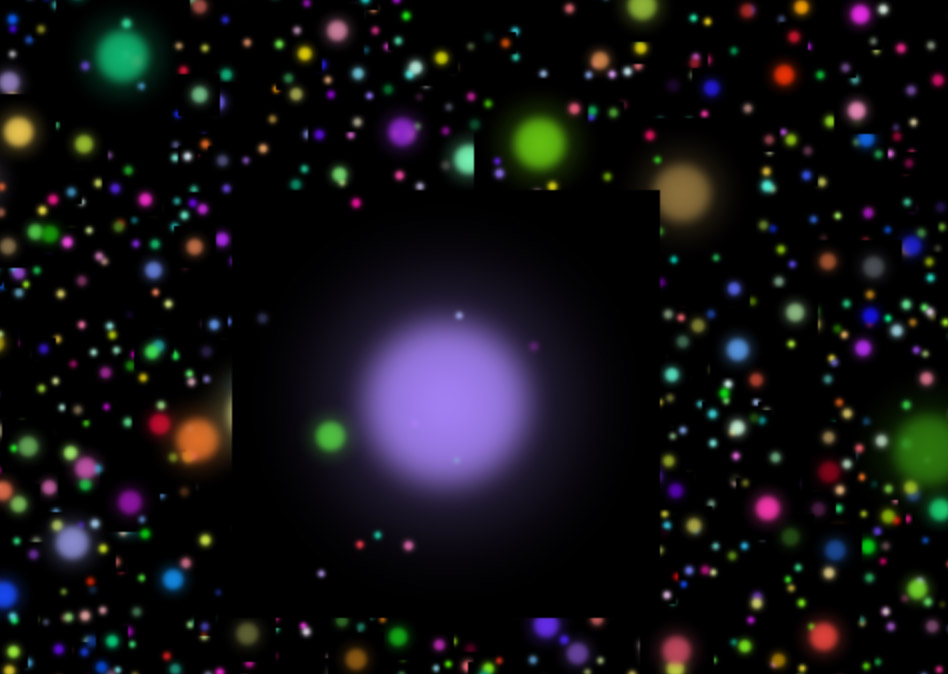
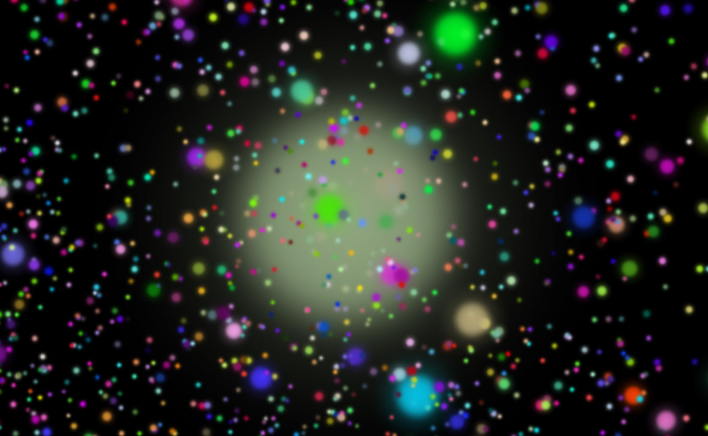

Les particules sont très utilisées et permettent d'accomplir divers effets tels que des étoiles, de la fumée, de la pluie, de la poussière, du feu, etc.
Les particules en WebGL ont pour particularité d'être très performantes et de toujours faire face à la caméra
On peut en afficher des millions sans subir de ralentissement
Pour gérer des particules, nous avons besoin de 3 éléments
const particlesGeometry = new THREE.SphereGeometry(3, 8, 8)
const particlesMaterial = new THREE.PointsMaterial()
const particles = new THREE.Points(particlesGeometry, particlesMaterial)
scene.add(particles)
Pour la Geometry, nous pouvons utiliser n'importe quelle géométrie de base de Three.js
const particlesGeometry = new THREE.SphereGeometry(3, 8, 8)
Mais nous pouvons aussi créer notre propre Geometry
Pour cela, nous instancions une class THREE.Geometry qui est une géométrie vide et nous lui rajoutons des THREE.Vector3 dans son tableau vertices
const particlesGeometry = new THREE.Geometry()
for(let i = 0; i < 500; i++)
{
const vertice = new THREE.Vector3(
(Math.random() - 0.5) * 10,
(Math.random() - 0.5) * 10,
(Math.random() - 0.5) * 10
)
particlesGeometry.vertices.push(vertice)
}
Nous pourrions créer notre propre Material en développant nos propres shaders, mais nous allons commencer avec une classe dédiée au particules appelée PointsMaterial
const particlesMaterial = new THREE.PointsMaterial()
PointsMaterial gère plusieurs paramètres
size permet de gérer la taille de la particule (défaut: 1)
const particlesMaterial = new THREE.PointsMaterial({
size: 0.2
})
sizeAttenuation permet d'indiquer si la proximité de la particule influence sa taille (défaut: true)
const particlesMaterial = new THREE.PointsMaterial({
size: 0.2,
sizeAttenuation: true
})
color permet de gérer sa couleur (défaut : 0xffffff)
const particlesMaterial = new THREE.PointsMaterial({
size: 0.2,
sizeAttenuation: true,
color: new THREE.Color(0xff0000)
})
map permet de lui appliquer une texture
import particleImageSource from './assets/images/particles/1.png'
const textureLoader = new THREE.TextureLoader()
const particleTexture = textureLoader.load(particleImageSource)
const particlesMaterial = new THREE.PointsMaterial({
size: 0.2,
sizeAttenuation: true,
color: new THREE.Color(0xff0000),
map: particleTexture
})
alphaMap permet de lui appliquer une texture d'alpha
Il ne faut pas oublier de rajouter transparent: true
import particleImageSource from './assets/images/particles/1.png'
const textureLoader = new THREE.TextureLoader()
const particleTexture = textureLoader.load(particleImageSource)
const particlesMaterial = new THREE.PointsMaterial({
size: 0.2,
sizeAttenuation: true,
color: new THREE.Color(0xff0000),
alphaMap: particleTexture,
transparent: true
})
Si on avait fourni une map avec transparence, Three.js aurait automatiquement déduit l'alphaMap
Il est possible de définir une couleur différente pour chaque particule
Pour cela, à chaque THREE.Vector3 que l'on rajoute dans le tableau vertices, il faut rajouter une THREE.Color dans le tableau colors de la Geometry
const particlesGeometry = new THREE.Geometry()
for(let i = 0; i < 500; i++)
{
// Vertice
const vertice = new THREE.Vector3(
(Math.random() - 0.5) * 10,
(Math.random() - 0.5) * 10,
(Math.random() - 0.5) * 10
)
particlesGeometry.vertices.push(vertice)
// Color
const color = new THREE.Color(Math.random(), Math.random(), Math.random())
particlesGeometry.colors.push(color)
}
Il faut ensuite indiquer au material d'utiliser ces couleurs avec la propriété vertexColor et retirer la propriété color
const particlesMaterial = new THREE.PointsMaterial({
size: 0.2,
sizeAttenuation: true,
alphaMap: particleTexture,
transparent: true,
vertexColors: true
})
Lorsque des particules se supperposent, des glitchs peuvent apparaître

Pour éviter ce problème, il faut tout d'abord rajouter depthWrite: false au material
const particlesMaterial = new THREE.PointsMaterial({
size: 0.2,
sizeAttenuation: true,
alphaMap: particleTexture,
transparent: true,
vertexColors: true,
depthWrite: false
})
Cela à pour effet que les particules ne sont plus des objets qui peuvent cacher d'autres objets
Malheureusement, cela peut engendrer un autre bug

Pour éviter ce problème, nous pouvons changer le blending
Cela correspond à la manière avec laquelle le Material se dessine sur ce qui se trouve derrière
Il existe plusieurs types de blending, mais celui qui nous intéresse est THREE.AdditiveBlending
const particlesMaterial = new THREE.PointsMaterial({
size: 0.2,
sizeAttenuation: true,
alphaMap: particleTexture,
transparent: true,
vertexColors: true,
blending: THREE.AdditiveBlending,
depthWrite: false
})
⚠️ Ce blending peut poser des problèmes de performance
Il existe 3 façons d'animer des particules
const loop = () =>
{
/* ... */
// Particles
particles.rotation.y += 0.002
/* ... */
}
Performant, mais limité aux transformations de base (postion, rotation, scale)
(directement sur la Geometry)
for(const _vertice of particlesGeometry.vertices)
{
_vertice.y += Math.sin(Date.now() * 0.001 + _vertice.x) * 0.01
}
particlesGeometry.verticesNeedUpdate = true
⚠️ Mauvais pour les performances
Il faut avertir la Geometry que ses vertices ont été modifiées avec verticesNeedUpdate = true
Mais nous verrons ça plus tard ☝️